News
Report 01 · Field Notes
Report 01
Antarwilayah
Kota dan daerah terpencil memiliki akses teknologi dan internet yang berbeda.
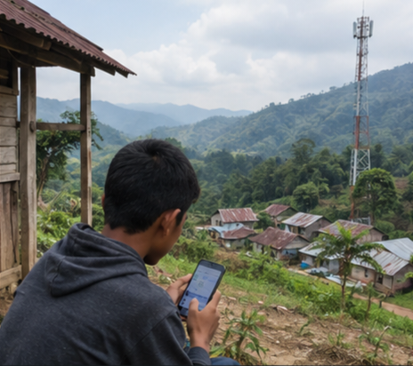

Dua pelajar. Dua negara.
Satu ruang
digital.
Apa Itu Globalisasi Sosial?
Globalisasi adalah meningkatnya keterhubungan dan ketergantungan antarmasyarakat di berbagai wilayah dunia. Proses ini didorong oleh teknologi, transportasi, ekonomi, serta pertukaran budaya dan ide.
Dalam aspek sosial, globalisasi mengubah cara manusia berinteraksi, membangun hubungan, membentuk komunitas, dan memaknai identitas. Interaksi sosial kini semakin melampaui batas wilayah, dengan pertukaran informasi dan pengalaman yang berlangsung cepat — seperti pelajar Indonesia yang dapat berdiskusi dan berteman dengan pelajar di Jepang melalui forum daring.
Dunia semakin terhubung.
Tapi bagaimana perubahan itu mengubah cara manusia
berinteraksi?
Teknologi memungkinkan manusia berkomunikasi secara cepat tanpa harus berada di tempat yang sama.
Globalisasi mempertemukan masyarakat dari latar belakang budaya berbeda sehingga terjadi pertukaran pandangan, kebiasaan, dan pengalaman.
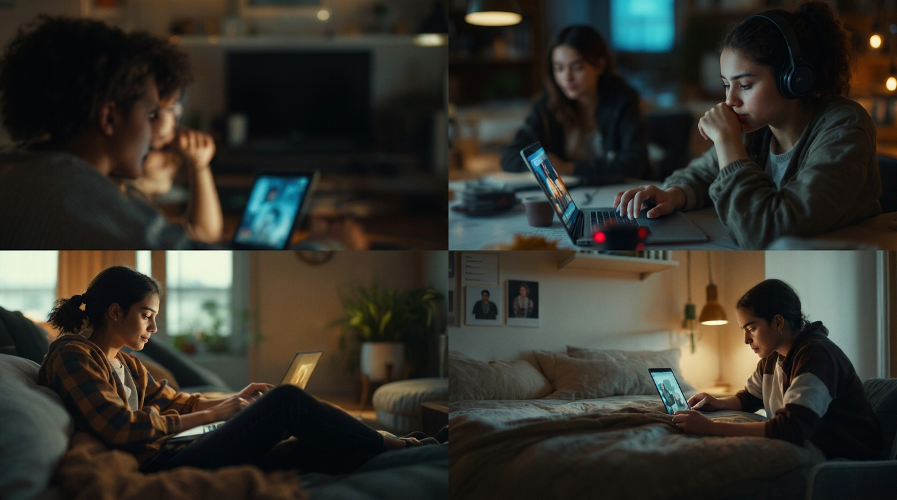
Masyarakat dapat membentuk komunitas berdasarkan minat, tujuan, atau identitas meskipun anggotanya berada di wilayah berbeda.
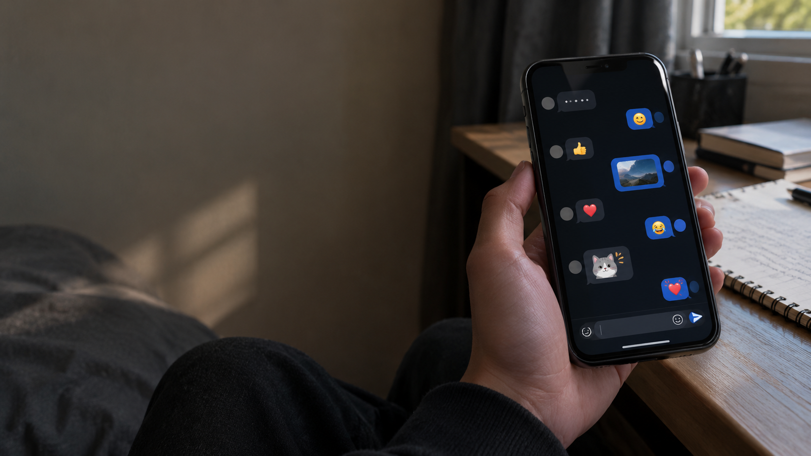
Emoji, stiker, bahasa campuran, serta etika berkomunikasi di ruang digital menjadi bagian dari pola interaksi sosial baru.
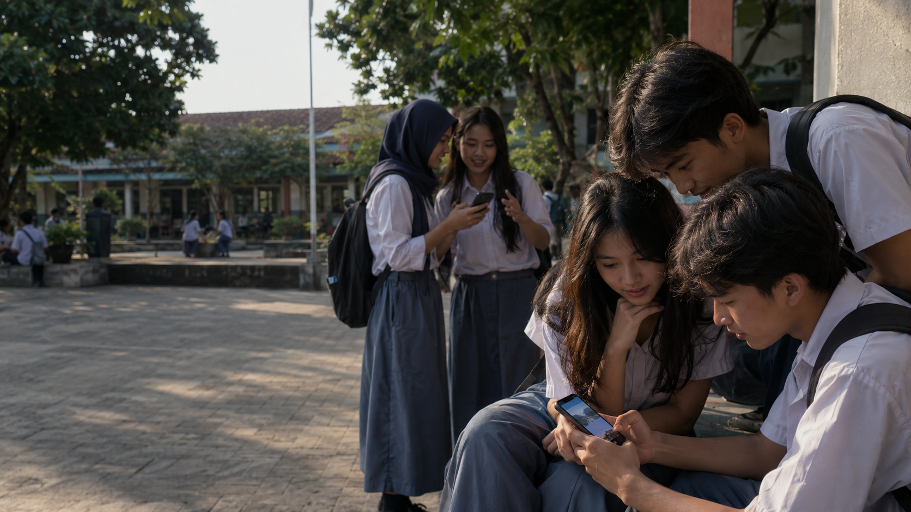
Informasi, gagasan, tren, dan gerakan sosial dapat menyebar dengan cepat dari satu wilayah ke wilayah lain.
Globalisasi tidak otomatis membuat masyarakat lebih individualis. Yang berubah terutama adalah bentuk dan ruang interaksinya.
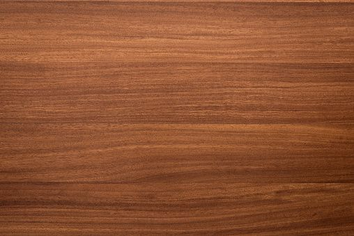
Unsur budaya seperti musik, makanan, bahasa, dan gaya hidup dapat menyebar dari satu masyarakat ke masyarakat lain.
Budaya atau produk global dapat disesuaikan dengan nilai, kebiasaan, dan kondisi lokal sehingga menghasilkan bentuk yang lebih sesuai dengan masyarakat setempat.
Pertemuan budaya lokal dan global dapat menghasilkan bentuk budaya baru yang merupakan perpaduan keduanya.
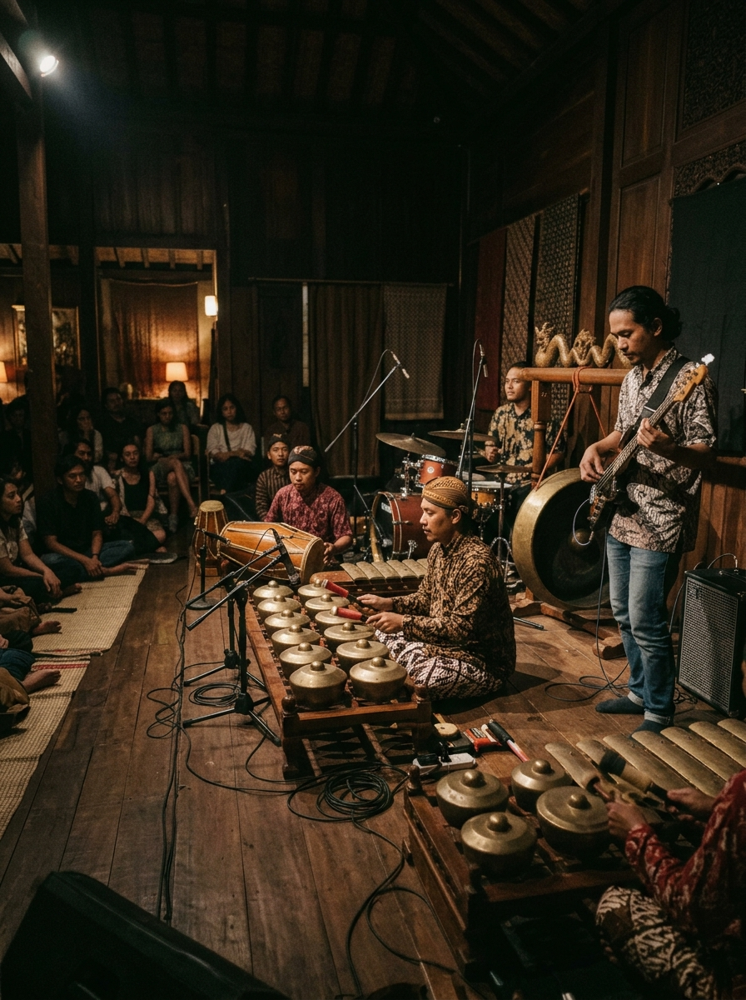
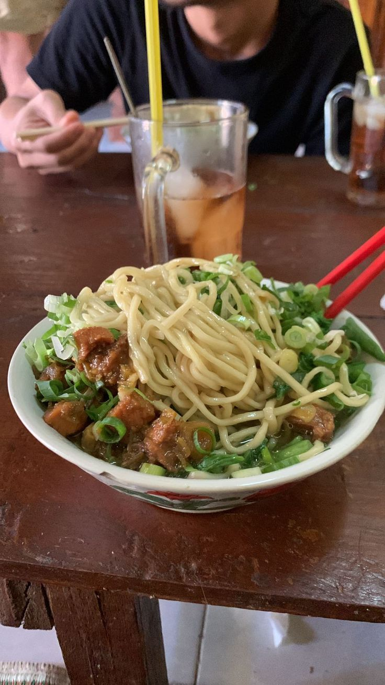
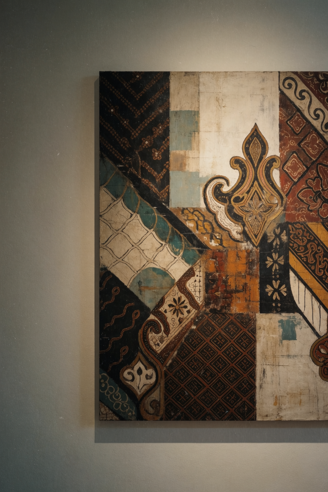
Budaya yang lebih dominan dapat memengaruhi atau menekan budaya lokal, terutama ketika terdapat ketimpangan kekuatan antarbudaya.
Perubahan budaya tidak selalu berarti budaya lokal hilang. Budaya dapat melemah, beradaptasi, berubah bentuk, atau justru semakin ditegaskan.
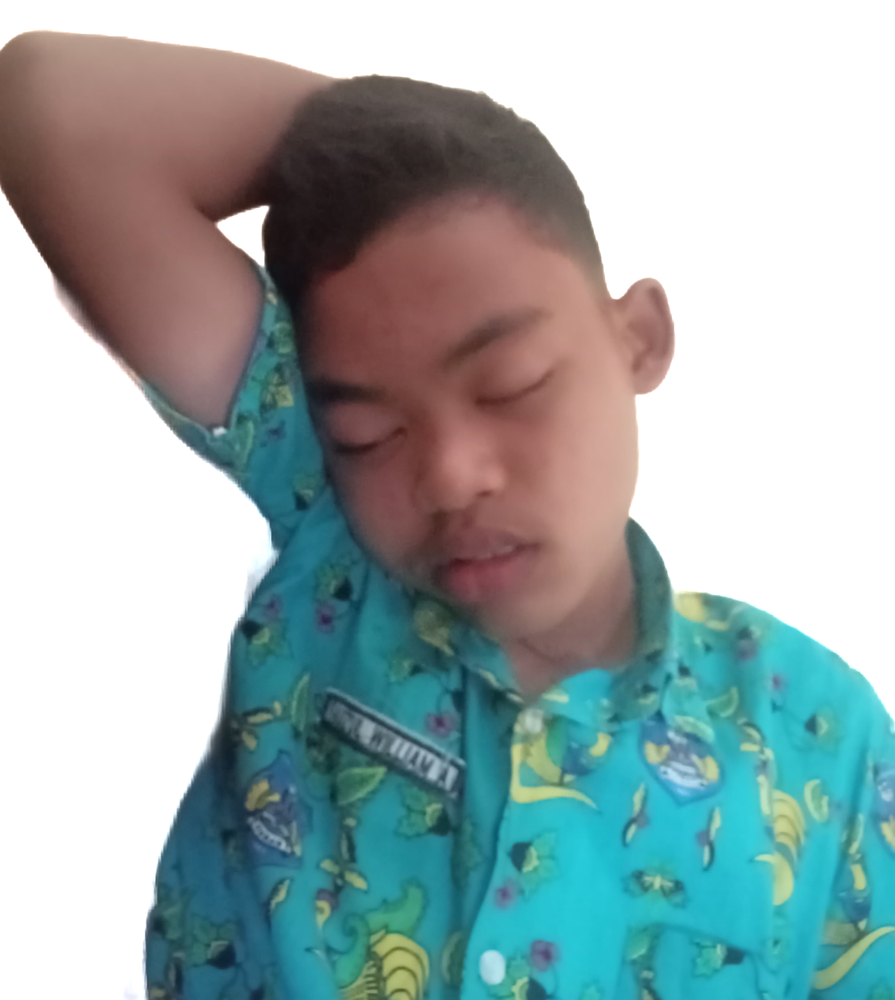
“Dampak globalisasi perlu dikelola, bukan sekadar diterima atau ditolak.”
Tidak Semua Orang Terhubung Secara Setara
Kota dan daerah terpencil memiliki akses teknologi dan internet yang berbeda.

Kemampuan menggunakan teknologi dapat berbeda antara generasi muda dan lansia.
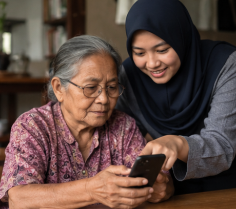
Harga perangkat dan internet dapat menjadi hambatan bagi sebagian masyarakat untuk terhubung secara digital.
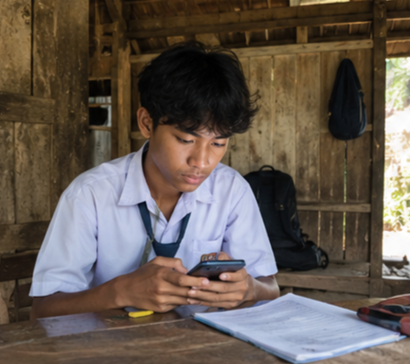
Tidak semua orang memiliki kesempatan pendidikan yang sama. Keterbatasan fasilitas pendidikan dan biaya yang mahal dapat membuat sebagian masyarakat kesulitan memperoleh pendidikan yang layak.

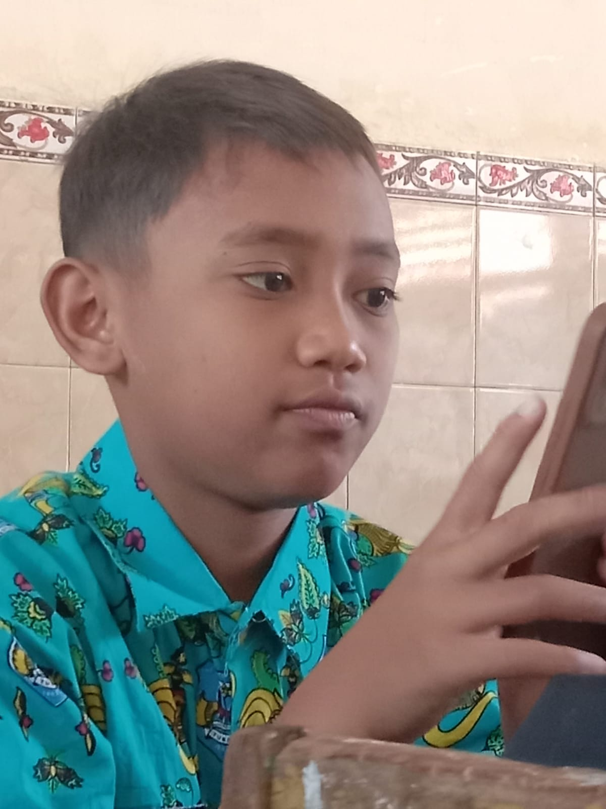
N Nangnang Sociology Sociology / Globalization“Mengenal dunia bukan berarti kehilangan arah; dengan pijakan identitas yang kuat, kita dapat melangkah lebih jauh.”
Kritis, Terbuka, dan Berakar
Belajar dari pengetahuan dan budaya baru.
Meningkatkan literasi digital dan memverifikasi informasi.
Menjaga dan mengembangkan budaya lokal.
Membangun solidaritas dan menghormati perbedaan.
Mendorong kesetaraan akses terhadap teknologi dan informasi.
Globalisasi sosial adalah realitas yang tidak dapat dihindari. Tantangannya bukan bagaimana menghindarinya, tetapi bagaimana menghadapinya secara terbuka, kritis, dan tetap memiliki identitas.
Teknologi komunikasi membuat dunia terasa seperti desa kecil karena jarak semakin tidak berarti.
Masyarakat semakin dipengaruhi prinsip efisiensi, keterhitungan, prediktabilitas, dan kontrol.
Budaya dari negara dominan dapat menyebar dan menekan budaya lokal melalui media dan industri hiburan.
Budaya global dapat diadaptasi dengan kondisi lokal sehingga menghasilkan bentuk baru.
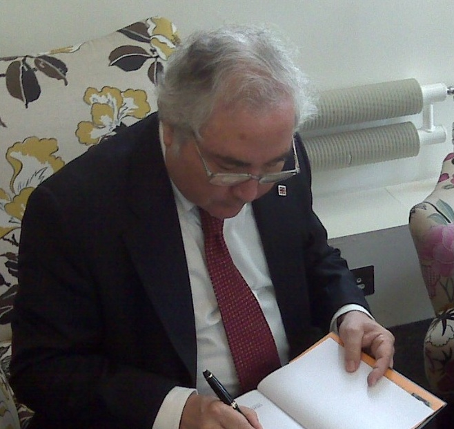
CJaringan digital membentuk kembali cara kekuasaan, ekonomi, dan identitas bekerja dalam masyarakat.